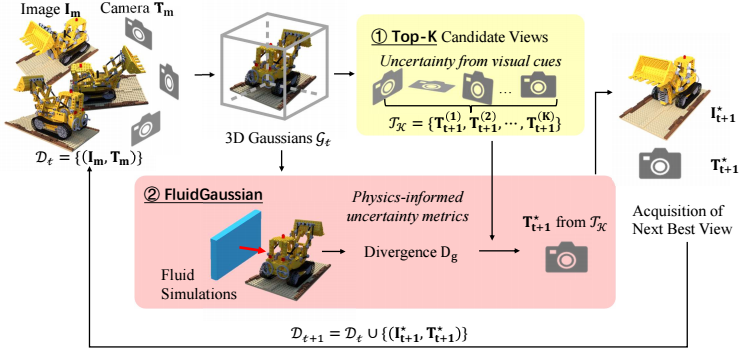
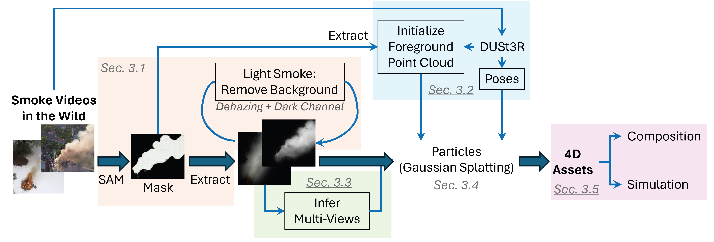
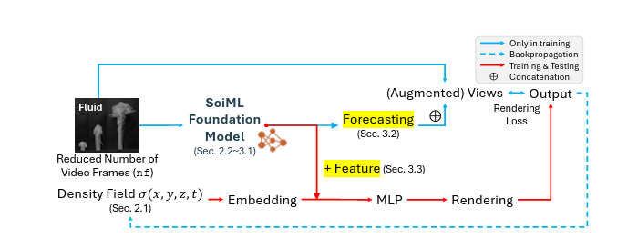
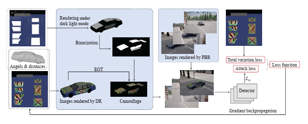
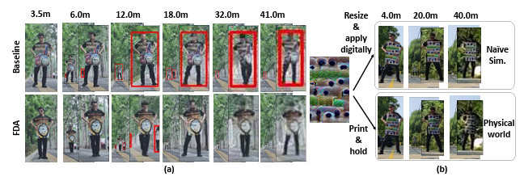
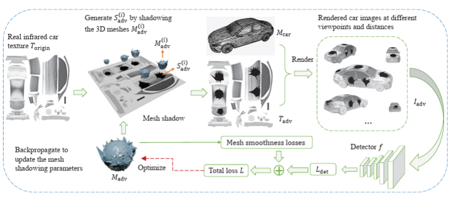
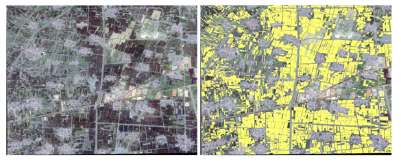

Publications * equal contribution
CVPR 2026

Preprint

WildSmoke: Ready-to-Use Dynamic 3D Smoke Assets from a Single Video in the Wild
3DV 2026

IEEE/CAA JAS

NeurIPS 2024

Full-distance Evasion of Pedestrian Detectors in the Physical World
CVPR 2024

Infrared Adversarial Car Stickers
ICACI 2022

The Winning Solution to the iFLYTEK Challenge 2021 Cultivated Land Extraction from High-Resolution Remote Sensing Images